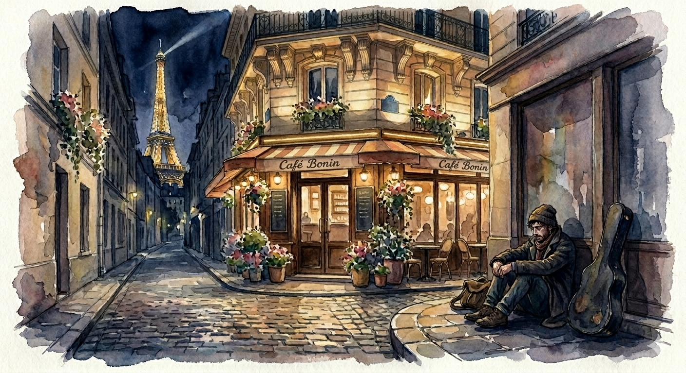
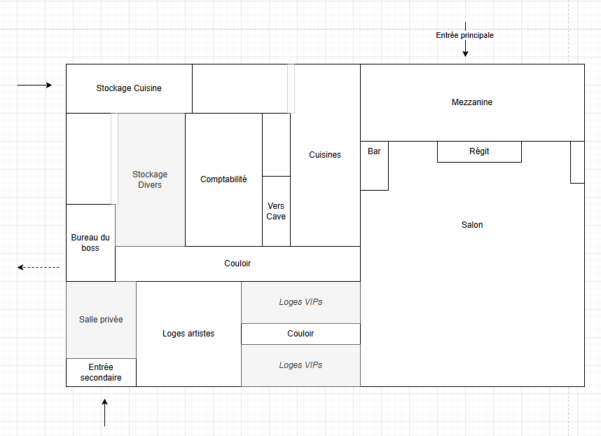

Noir · Introspection · Action — One-shotFausse Note
Un artiste de cabaret au bout du rouleau accepte un soir d'essai dans un club parisien de standing, aussi discret que feutré.
Pitch
Texte de présentation du scénario, à transmettre tel quel au joueur pour poser le décor et son personnage.
Artiste dans les petits cafés de Paris des années actuelles, vos reprises sont de qualités, vos compositions sont originales, mais le public vous oublie aussitôt que les projecteurs qui vous plonge dans l'obscurité. Endetté jusqu'au cou pour un album qui n'a jamais décollé et des problèmes familiaux, vous venez de vivre votre pire humiliation au café Bonin. Hier, vous en avez été expulsé sans paye. Et vous êtes loin d'avoir assez d'énergie pour engager un recours.
Derrière cet échec, une opportunité s'est présentée à vous au travers d'une femme élégante au béret rouge qui a écouté votre représentation, Ericka, vous a ramassé à la petite cuillère. Elle prétend chercher quelqu'un de votre trempe : Le rendez-vous est fixé à 23h, rue Madame. La rémunération proposée pour la soirée pourrait au moins vous permettre de payer votre loyer Parisien ce mois-ci. Une chance qui ne se représentera sûrement pas.
Préface
Le PJ est un artiste-interprète des petits cafés de Paris. De belles reprises, des compositions originales — mais un public qui l'oublie sitôt que les projecteurs le replongent dans le noir. Endetté jusqu'au cou pour un album qui n'a jamais décollé, miné par des histoires de famille, il vient de vivre l'humiliation de trop : expulsé hier soir du café Bonin, sans paye, sans force pour engager un recours.
Derrière cet échec, une opportunité. Une femme élégante, béret rouge, l'a écouté jusqu'au bout puis ramassé à la petite cuillère. Ericka. Elle dit chercher « quelqu'un de sa trempe ». Le cachet d'une soirée pourrait suffire à payer le loyer du mois. Une chance qui ne repassera pas.
Note d'intention pour le MJ
C'est un thriller noir intimiste pour un seul joueur. Les trois quarts de la soirée sont de la conversation, de l'observation et du malaise qui monte : prenez votre temps, laissez les silences respirer, posez beaucoup de questions sur le personnage, et servez-vous-en à outrance pour rebondir et rendre le jeu vivant : les PNJ sont réellement intéressés par le PJ. La violence n'arrive qu'à l'acte 5 et doit faire l'effet d'un coup de tonnerre, pas d'un climax attendu. Théâtre de l'esprit : décrivez la lumière, la fumée, le velours, l'argent. Le joueur doit comprendre où il a mis les pieds bien avant d'avoir un moyen d'en sortir.
Échelle de difficulté
Système agnostique. Ce scénario, très tourné vers le dialogue et l'observation, ne demande que de rares jets — réservez-les aux vrais moments de bascule ou d'action.
Préparation
Avant la partie (ou en ouverture), construisez le personnage ensemble. Vous avez besoin de trois choses :
- Un nom et un prénom.
- Le genre de musique proposé, et l'instrument s'il y en a un — chanson, jazz, folk, piano-voix, slam… Un lien vers une musique « signature » ou un exemple est un vrai plus pour l'ambiance, mais reste facultatif.
- Une idée de la personnalité et du comportement du personnage, en scène comme hors scène — c'est ce qui portera tout le roleplay.
Contexte
Le Lagon Bleu est le cœur logistique du cartel de l'Hydre. Le grand secret de la soirée tient en une personne : la véritable identité d'Ericka.
Qui dirige vraiment le Lagon Bleu — révélation centrale Secret
L'Hydre a été « décapitée » plusieurs fois par la police : ses chefs successifs (le dernier en date, Carlos Mangini, puis Berlioz) ne sont que des visages. La véritable tête — le cœur du cartel — est une femme qui change d'identité comme de couleur de cheveux. Aujourd'hui elle s'appelle Ericka Dufrêne. Berlioz n'est que le N°2, la façade publique du cartel : lui le sait parfaitement, et il est même le seul, dans toute la maison, à connaître la vérité sur Ericka.
C'est exactement ce que le flic infiltré Marc a découvert et enregistré sur sa clé USB : « Ce n'est pas la tête de l'Hydre qu'il fallait couper, mais le cœur qu'il faut transpercer. »
Scène 1 La voiture
21h17. 8 rue Madame. Le décor du rendez-vous, sous une pluie battante. Cette scène est entièrement consacrée à connaître le personnage — c'est un entretien d'embauche déguisé en confession.
« 21h17. 8 rue Madame, à une dizaine de rues du café Bonin d'où l'on vous a viré hier sans une once de honte. Sur votre gauche, l'enseigne lumineuse "Au service de la liturgie" vous gêne un peu la vue. Ericka, la femme au béret rouge, a été claire : "Si tu veux vivre de ta musique, ta soirée d'essai commence à cette adresse dans cinq minutes. Sois présentable." 21h18 — il pleut à verse. Aucun abri, sinon peut-être le porche de ce commerce d'en face, "Odorantes". Alors : comment êtes-vous ? Quel état d'esprit ? Habillé comment ? »
« 21h20. Une Audi blanche se range à hauteur de l'adresse — ç'aurait pu être un Uber. La portière s'ouvre, côté conducteur : Ericka. Le béret rouge a cédé la place à une tenue de soirée de très bonne facture. Boucles d'oreilles serties de petits saphirs, robe bleu marine décolletée, rouge à lèvres foncé. "Monte. On a un peu de route." »
Sur le trajet — l'entretien d'Ericka
En apparence, un entretien d'embauche mené au volant. En réalité, Ericka cherche à se rapprocher : le PJ l'a touchée sur scène, elle le trouve talentueux et, oui, il ou elle l'attire. Sous chaque question affleure une tentative de séduction sincère. Posez-les pour de vrai, écoutez, rebondissez : chaque réponse nourrit autant le portrait du personnage que le jeu de charme entre eux — et tend des cordes que la nuit pourra tirer plus tard.
Quelques pistes — à adapter, couper ou remplacer par les vôtres. Surtout, rebondissez sur ce que dit le joueur plutôt que de dérouler la liste : relancez sur ses réponses, creusez ce qui l'émeut, laissez la conversation dériver où il l'emmène.
- Q1 — La musique. « D'où ça te vient ? Qu'est-ce que ça t'inspire ? »
- Q2 — La famille. « Et ta famille, elle en pense quoi, de tout ça ? »
- Q3 — Le cercle proche. « La vie d'artiste, c'est souvent solitaire, non ? Il y a quelqu'un qui partage ta vie ? » (la vraie question, sous la question)
- Q4 — L'imprévu. « Et quand ça dérape, sur scène, dans la vie — tu fais quoi ? »
- Q5 — Les rêves. « Si tout marchait, ce soir, demain — tu veux quoi, au fond ? »
Rien d'imposé ici : cette piste de séduction est une matière à jouer, pas une obligation — saisissez-la, dosez-la ou laissez-la de côté selon votre table et le joueur. Si vous la jouez, faites sentir l'intérêt d'Ericka plutôt que de l'annoncer : un regard qui s'attarde, un sourire en coin, le buste qui se tourne vers le PJ, le tutoiement complice, une main qui frôle, des compliments sincères sur le talent (jamais creux), un silence qui invite à se confier. Cela fonctionne quel que soit le genre du PJ. Montez par petites touches, lisez les réactions du joueur, et laissez le PJ libre d'y répondre, d'esquiver ou de feindre l'aveugle : c'est cette ambiguïté qui rend la scène vivante — et qui donnera plus tard une double lecture à l'attitude d'Ericka. Au besoin, assurez-vous d'un mot, hors-jeu, que le joueur est à l'aise avec ce registre.
En se confiant un peu — le rapprochement aide — Ericka laisse filer trois choses, à semer au gré de la conversation :
- Son patron s'appelle Berlioz, un passionné de musique, un vrai : « Je suis sûre que tu lui plairas. »
- Elle a un fils, Daniel — un enfant que le PJ croisera plus tard au club.
- Que ça s'est très mal terminé avec son ex-mari, sans s'étendre. (C'est Jul, mais elle ne le nomme pas.)
Les règles de la maison
Avant d'arriver, Ericka pose le cadre du Lagon Bleu — un lieu « de tenue et de standing », discret par nature. À glisser sans casser l'ambiance du trajet, mais sans laisser d'ambiguïté :
« Deux-trois petites choses sur la maison, avant qu'on y soit. Ici, on est bien habillé — mais ça, je n'ai pas eu besoin de te le dire. On n'aborde personne sans y avoir été invité, on ne traîne pas dans les couloirs sans y avoir été invité : tu restes dans l'espace artiste, tu joues, tu salues, et tu retournes en loge jusqu'à ce qu'on vienne te chercher. Ah — et pas de téléphone : tu me le confies ? Je te le rends à la fin, promis. »
Le rendre coupe le PJ du monde extérieur (et de tout appel à l'aide). Le garder en douce est tentant, mais il y a peu de chances que ça passe : Très difficile — Ericka est attentive. En cas d'échec, elle le relève aussitôt, sur le ton de la remontrance (« On avait dit pas de téléphone. »). En cas de réussite, le PJ garde un lien avec l'extérieur… mais l'avoir caché est un élément qui pèsera contre lui à la fin du scénario. Dans tous les cas, c'est une mauvaise idée.
Scène 2 Avant la représentation
Ericka dépose le PJ dans l'espace artiste (loges) et s'éclipse — juste le temps d'aller garer la voiture. Le PJ a un moment pour respirer, accorder son instrument, observer — et faire deux rencontres.
« La loge sent le velours et le cuivre chaud. Un miroir cerclé d'ampoules, des costumes sur cintres, le grondement étouffé d'une salle pleine au loin. Quelques personnes sont là et attendent leur tour ou rangent leurs affaires. Et vous faites partie de ces personnes maintenant. »
Opale, la danseuse
Opale est déjà là, en train de se changer. Elle a répondu à une annonce — elle n'est pas « de la maison ». Ce soir, elle doit danser sur la musique du PJ : elle vient le trouver pour le rassurer, promet d'improviser avec lui, le met à l'aise. Sa place est juste à côté de la sienne ; un emplacement d'artiste libre l'attend auprès d'elle.
À improviser en rebondissant avec le PJ ; c'est court. Le but n'est pas de transmettre des informations mais de créer de l'attachement : rendez Opale vivante, complice, attachante, donnez-lui de la valeur aux yeux du personnage.
Opale est une cousine du PJ — pur hasard ; ni l'un ni l'autre ne s'y attendait, et Ericka elle-même l'ignore (elle a recruté le PJ pour son seul talent). Jouez ça comme des retrouvailles : ils ne se sont peut-être pas vus depuis longtemps : la surprise, la joie, la tendresse de se retrouver là, par le plus grand des hasards.
Daniel, l'enfant
Daniel, un garçon d'une dizaine d'années en jean simple, vient simplement se présenter — c'est lui qui appellera les artistes en scène. Bienveillant, poli, le regard un peu trop calme pour son âge.
Daniel est le fils d'Ericka et de Jul — l'enjeu vivant de la guerre qui va éclater. Son but, à sa manière d'enfant : « aider les gens clean à le rester ». Il jaugera vite le PJ comme quelqu'un qui n'est pas (encore) sale. Gardez-le mystérieux et doux ; il reviendra à plusieurs moments-clés.
Les autres artistes — et le test
La représentation est aussi une mise à l'épreuve : on veut voir comment le PJ réagit. Donc personne ne le prévient que la maison baigne dans la drogue — il doit le découvrir seul, sur scène (scène 3). Les autres artistes — cinq ou six, de toute nature qu'on croise dans un cabaret (chant, magie, contorsion… à improviser, sans importance) — restent évasifs : s'il tente d'engager la conversation, ils éludent et s'esquivent. Parler, maintenant, est un risque qu'aucun d'eux n'est prêt à prendre.
Scène 3 La représentation
Daniel vient chercher le PJ. C'est le moment de jouer — et de voir. La grande révélation de la soirée passe par les yeux de l'artiste sur scène, impuissant, exposé.
« Vous reconnaissez vite l'ambiance dont Ericka parlait. Des costumes plus fringants les uns que les autres, des murmures discrets qui circulent, des regards à peine intéressés vers la danseuse, une oreille à peine tendue à votre musique. Au fond, les lettres de "Lagon Bleu" scintillent d'une lueur bleue électrique. La lumière est tamisée — mais vous voyez. Face à vous, des pochons de poudre blanche passent de main en main : de la cocaïne. Des mallettes. De l'argent. Beaucoup d'argent. Quelqu'un, dans un coin, le compte. Tout ce monde est dedans — et maintenant, vous le savez aussi. Ce n'est pas un club de bonnes gens : c'est un point névralgique de deals à grande échelle. Plus haut, sur une mezzanine qui vous surplombe, une table : un homme un peu rond, sûrement le patron, Berlioz, discute avec un autre, grand, bien mis, lunettes discrètes. Les deux ont une mallette, et se l'échangent. Puis Berlioz tend la main vers la scène — vers vous — et invite l'autre à profiter du spectacle que vous donnez. Quelle est votre réaction ? »
Le cœur de la scène : le PJ doit continuer à jouer alors qu'il comprend tout. Garder contenance et finir le set sans trembler — Modéré. S'il s'arrête, fuit des yeux, ou improvise un message dans une chanson, c'est du grand roleplay : récompensez l'audace, mais rappelez que des regards se posent désormais sur lui.
Entre deux morceaux — une danseuse
Un numéro de danse s'enchaîne avec la musique ; Opale croise le regard du PJ, un sourire complice qui dit « tiens bon ». Et s'il croise leur regard, Daniel et Ericka lui adressent des signes d'encouragement.
Interception de Marc
Pendant la représentation, le cartel démasque Marc — la taupe. Un homme correctement habillé l'entraîne fermement vers les loges d'artiste ; Marc se débat un peu sur le côté et, d'un geste habile, laisse tomber une clé USB dans les plis du rideau de scène, à portée du PJ. À lui de la ramasser… ou pas. Marc, lui, sera exécuté ailleurs : on ne le retrouvera jamais.
Le PJ fait ce qu'il veut de la clé. La récupérer ne demande aucun jet en soi — sauf s'il tient à le faire discrètement : Facile. Et si le joueur est inventif — détourner l'attention de Daniel, par exemple — pas de jet du tout.
Scène 4 En coulisses
Set terminé, le PJ regagne la loge. Libre de ses mouvements dans l'espace artiste — mais impossible de sortir : un garde tient la porte d'entrée et l'empêchera de passer (et il est bien plus fort que lui). Ce temps suspendu est laissé au PJ pour tenter de déchiffrer la clé USB et, s'il le souhaite, débriefer avec Opale.
Ne bridez pas : rebondissez sur ses initiatives. Opale est effrayée — le PJ peut choisir de la rassurer ou non, comme il l'entend ; il a libre cours à son imagination. Pour lire la clé, encouragez les bonnes idées : ce ne doit pas être un obstacle trop complexe. Mesurez les risques pris et la finesse de l'approche, puis modulez la difficulté en conséquence — une idée astucieuse peut faire sauter tout jet. Et s'il interroge des gens qui ne sont pas du cartel, tous — Daniel compris — se montrent rassurants : il ne s'est jamais rien passé de mal au Lagon Bleu.
Ce que contient la clé USB
Le PJ peut décider de trouver un moyen de lire la clé USB : un ordinateur en régie, le portable d'une loge, un coup de main discret…
Contenu de la clé USB — à révéler si le PJ parvient à la lire Secret
Le dossier de Marc. L'Hydre a été abattue maintes fois, mais elle repousse : ses chefs sont toujours des inconnus, sans lien entre eux. Le dernier, Carlos Mangini ; aujourd'hui, Berlioz. Marc a compris la vérité : ces visages ne sont que des têtes interchangeables. « Ce n'est pas la tête de l'Hydre qu'il faut couper, mais le cœur qu'il faut transpercer : une femme qui change d'identité, et qui s'appelle actuellement Ericka Dufrêne. »
Le PJ tient la pièce qui fait de lui un homme mort s'il est découvert — et le seul qui sache vraiment qui l'a recruté ce soir.
Quand vous — ou le PJ — êtes prêts à passer à la suite, déclenchez la scène suivante en faisant venir Ericka, qui vient le chercher : « Le patron veut te rencontrer. Il a aimé. » Elle le mène vers la mezzanine.
Scène 5 La table de Berlioz
Le pivot de la soirée. Ce qui commence en entrevue feutrée bascule en exécution, puis en guerre ouverte. Jouez la première moitié lente et chaleureuse pour rendre la rupture brutale.
Ericka mène le PJ à la table de Berlioz par le couloir intérieur — différent de celui emprunté pour gagner la scène. En chemin, elle n'hésite pas à s'arrêter, à prolonger la conversation si le PJ lui parle (rappel : elle est attirée).
L'entrevue
Ericka demande au PJ comment il se sent, s'excuse de ne pas lui avoir dit plus tôt « dans quoi il mettait les pieds », puis glisse, l'air de rien : « Au fait. L'homme aux lunettes, tout à l'heure — il t'a parlé ? Donné quelque chose ? »
Mentir à Ericka joue un point de plus en défaveur du PJ (cela pèsera à la fin). Jaugez si le mensonge est recevable et modulez la difficulté selon le mensonge et le contexte ; à défaut, comptez Modéré.
Berlioz
Ericka l'emmène sur la mezzanine, où Berlioz les attend à sa table. Berlioz, lui, est expansif, généreux, sincèrement passionné par la musique. Il parle du set du PJ avec une vraie ferveur et l'invite à s'asseoir. Chaque mot du PJ est presque exagéré par le bonhomme : prenez chacune de ses paroles comme une occasion, pour Berlioz, d'embarquer le PJ avec lui. Il n'hésite pas à évoquer le contrat : le PJ est pris, de toute façon, deux soirs par semaine comme convenu.
Pendant ce temps, Ericka se place près de Jul pour le surveiller ; son visage est lisible — au plus profond d'elle, elle le hait.
Scène courte, bientôt interrompue par Jul.
Jul s'impatiente
À la table, l'homme tatoué — Jul, chef du gang de l'Étoile — n'attend plus (son tatouage figure une étoile à douze branches). Il veut récupérer son fils. À l'instant où il prend la parole, l'expansivité de Berlioz s'éteint d'un coup et un froid parcourt la table. Le ton monte. Jouez l'échange suivant tel quel, à voix haute, en alternant les voix :
Jul — « Bon, Berlioz, on revient à nos affaires. Comme je disais : je me casse pas d'ici sans mon fils. Je sais qu'il est là. »
Berlioz — « Et comme je te disais, Jul : Daniel reste ici. Notre deal ne le concerne pas. Tu as ta came, maintenant tu dégages. »
Jul — « Sinon quoi, Berlioz ? Vous allez me flinguer, ici, maintenant ? »
Ericka — « Surveille ton langage, Jul. Ou ça va très mal finir pour toi. »
Jul (il rit) — « Tu disais pas ça quand t'étais entre mes cuisses, hein ? »
(Ericka sort une arme.)
Berlioz — « Oh. Ericka. Doucement. »
Jul — « Ouais. Ericka. Tu changes de nom comme de couleur de tif, toi. (à Berlioz) Vous savez, Berlioz : avoir un gosse, c'est la meilleure et la pire chose qui puisse vous arriver. La meilleure, c'est le gosse. La pire, c'est que votre pute d'ex vous le kidnappe et vous… »
Vous pouvez faire interrompre la conversation par Jul à tout moment : si c'est le cas, improvisez les conséquences. Si le PJ tente d'intervenir pour calmer le jeu, demandez un jet Modéré. Dans le cas — peu probable — où il désamorce si bien la scène qu'on ne peut aller jusqu'au bout (jusqu'à la mort de Jul), laissez Jul repartir : la suite peut tout de même avoir lieu. Passez alors à la scène suivante, et faites comprendre au PJ, par la bouche de Berlioz et d'Ericka, qu'en plus de son talent musical il a un sacré pouvoir de persuasion. En revanche, jamais Ericka ne livrera Daniel à Jul.
Ericka l'abat avant qu'il finisse sa phrase. Une détonation sèche dans le velours. Une seconde de silence absolu. Puis une explosion retentit en contrebas : le sol tremble, les lumières vacillent. Le gang de l'Étoile passe à l'assaut — Jul avait préparé sa guerre dès son arrivée.
Scène 6 Le grand bazar
Fusillade dans le club. L'action prime, mais elle reste au service de la fiction : le PJ n'est pas un soldat, c'est un musicien qui veut survivre.
« Une voix grésille sur un talkie tombé à terre : "Ils sont plus nombreux que prévu." Puis ça déboule dans la salle. Ça tire de partout. Le verre explose, le bar s'effondre, quelqu'un hurle. L'odeur de poudre couvre celle du parfum. Vous êtes au milieu, à découvert. »
Laissez le PJ décider lui-même comment il veut sortir ; ne lui imposez pas d'itinéraire. Pour nourrir sa fuite, trois éléments à faire surgir au bon moment :
Trois éléments de fuite
- Le cri d'Opale retentit dans le couloir, entre la scène et la loge artiste. S'il la laisse, c'est un poids pour l'épilogue ; s'il va la chercher, sa fuite est ralentie — rendez alors plus difficile son jet de sortie.
- Berlioz tombe juste à côté du PJ. À la première occasion, abattez-le tout contre le personnage, qui n'en sera que plus choqué : c'est un « joker » offert au PJ — un coup encaissé par un autre — avant qu'il soit lui-même blessé. Dans son dernier souffle, Berlioz lui glisse qu'on peut fuir par le bureau, au fond du couloir intérieur (celui par lequel Ericka l'a fait passer).
- Daniel se trouve dans ce couloir d'où Ericka l'a amené, encore calme pour l'instant. Il a reçu un coup contondant mais n'est que très légèrement blessé. Si le PJ veut l'emmener, aucun jet n'est requis.
Désormais, la soirée peut varier énormément d'une partie à l'autre. La section suivante recense les possibilités de sortie — mais prenez toute liberté, innovez, et rebondissez sur ce que fait le joueur.
Scène 7 Sortie et fin
Dehors comme dedans, c'est la guerre : la police boucle le quartier, le gang et le cartel s'entretuent. Trois sorties s'offrent au PJ, très inégales — et la manière dont il s'en tire, autant que ce qu'il a fait de sa nuit, décide de sa fin. À partir d'ici, improvisez large : ce qui suit n'est qu'une carte des possibles.
Les trois sorties
- L'entrée principale — celle dont le PJ ne s'est jamais approché, et la plus difficile : c'est de là que déferlent les assaillants.
- L'entrée secondaire — celle par laquelle il est arrivé. Compliquée elle aussi : des assaillants y passent, et c'est là qu'Opale est plus ou moins capturée, ou malmenée. S'il tente de fuir par là, faites-lui comprendre — par des tirs venus de l'allée qui mène au Lagon Bleu — que l'endroit est extrêmement risqué.
- Le bureau — la sortie indiquée par Berlioz, et de loin la meilleure (voir ci-dessous).
La bonne sortie — par le bureau
En passant par le bureau, le PJ débouche sur une rue intermédiaire entre deux bâtiments, où la police tente de l'interpeller. Mais quiconque l'accompagne lui indique une échelle, juste en face, à emprunter absolument. Vous pouvez pimenter un peu (des policiers qui tirent pendant la fuite), mais il faut que s'en tirer par là reste très facile.
Puis viennent les toits : en traversant le bâtiment d'en face, le PJ ressort dans une rue hors du périmètre bouclé par la police. Ericka l'y attend, au volant de l'Audi — prête à embarquer le PJ et toute personne qu'il a sauvée.
Fin A — monter dans l'Audi
Monter dans l'Audi clôt la scène de fuite. Profitez du trajet pour débriefer entre le PJ et Ericka : c'est cet échange qui construit l'épilogue, laissé à votre libre improvisation.
Si le PJ a été contre-productif, ou si Ericka a des doutes (il a menti, désobéi à ce qu'elle demandait…), une fin possible est la mort. Sinon, offrez-lui la possibilité de rejoindre le cartel et d'obtenir enfin la gloire qu'il était venu chercher : Ericka a les contacts pour lui bâtir une vraie notoriété. Donnez la fin que souhaite le PJ, en cohérence avec le fait qu'il a choisi le cartel.
Adaptez l'accueil d'Ericka et la couleur de l'épilogue aux personnes ramenées :
- Daniel — Ericka est profondément reconnaissante ; s'il l'a laissé derrière, elle est au contraire folle de rage.
- Berlioz — les têtes du cartel sont sauvées (l'Hydre garde sa façade).
- Opale — le PJ a sauvé l'un des siens : mettez ce geste en avant.
Fin B — se rendre à la police
Si le PJ choisit la police, enchaînez vite :
- On l'éloigne du Lagon Bleu.
- On le fait monter dans une voiture de patrouille, un peu à l'écart.
- Aussitôt, l'Audi d'Ericka surgit — Ericka à l'intérieur — pour récupérer le PJ, quitte à abattre la policière qui conduit.
Si le PJ tente de s'opposer à Ericka, alors elle tentera de le tuer, lui aussi.
Fin C — s'attarder au Lagon Bleu
Si le PJ reste trop longtemps dans le Lagon Bleu, terminez la scène en faisant exploser le club tout entier. Selon l'endroit où il se trouve, il en sort gravement blessé… ou mort.
Scène 8 Épilogue ouvert
Le scénario n'impose pas de fin. Faites converger les choix de la nuit vers l'une de ces issues, et terminez sur une image forte. Rappelez la solitude du début : le PJ a quitté le noir des projecteurs pour un autre noir.
Propositions de fins
- Entrer dans le cartel. Le PJ accepte la main que lui tend Ericka. Fini la misère ; commence une autre captivité. Dernière image : il rejoue sur une scène, devant un public bien plus nombreux — une fin qui célèbre la gloire d'avoir enfin réussi, avec un bémol : le cartel est derrière lui.
- Option : faire naître une histoire d'amour avec Ericka.
- Autre option : laisser le PJ devenir la nouvelle tête de l'Hydre — sachant qu'Ericka tiendra bien plus à cette tête-là qu'à toutes les précédentes.
- Reprendre sa vie d'avant. Il s'en sort, se tait, retourne à ses cafés. Mais le cartel n'oublie pas : une ombre, une voiture qui ralentit, un béret rouge dans le public un soir. La traque a commencé.
- Coopérer avec la police. S'il livre la clé USB, Ericka peut être retrouvée et arrêtée — mais pas de gloire pour autant : le PJ restera dans le noir et l'oubli.
- Blessé grave. Réveil à l'hôpital. À son chevet, Ericka — mais elle a notablement changé d'apparence (taille et couleur de cheveux, vêtements, maquillage), au point qu'on la reconnaît surtout à sa voix. Élégante et calme, elle se penche : « Repose-toi, tu es en sécurité, je suis là, il ne pourra rien t'arriver. » Coupez là.
Si le PJ meurt, ne tranchez pas net : offrez-lui une vraie scène de mort. Posez-lui des questions : à quelle dernière scène pense-t-il ? Quelle est la dernière personne qu'il revoit ? Laissez un dernier flash de sa vie d'artiste — une salle vide, une chanson inachevée — et donnez du sens, jamais un simple game over.
Annexes Les personnages
Fiches narratives, sans statistiques : jouez-les par leurs intentions et leur voix. Les blocs Secret de l'intro complètent ces fiches.
Ericka Dufrêne PNJ
Femme fatale. Séductrice, mais glaciale dès qu'on dépasse la ligne.
Engager le PJ pour animer le lieu.
Elle est le vrai cœur du cartel de l'Hydre, derrière la façade de Berlioz. Elle change d'identité comme de couleur de cheveux. Mère de Daniel, ex de Jul.
Posée, basse, jamais pressée. Pose des questions plus qu'elle n'en répond. Le compliment et la menace dans la même phrase.
Daniel, et le contrôle. Tout ce qui menace l'un ou l'autre peut la faire tirer la première.
Berlioz (Jack) PNJ
Gros, cigare, moustache, voix cassée. Le visage débonnaire du cartel.
Plaire à Ericka pour, probablement, obtenir plus de contrôle sur le cartel.
Il n'est que le N°2, la façade publique de l'Hydre, depuis peu — mais c'est le seul, dans toute la maison, à savoir qui est vraiment Ericka.
Chaleureuse, gourmande, théâtrale. Multiplie les références de jazz à tout propos. Tutoie vite, comme un parrain bienveillant.
Sa passion sincère pour la musique le rend vulnérable et presque touchant.
Jul PNJ
Grand, largement tatoué, casquette, lunettes de soleil en intérieur. Chef du gang de l'Étoile.
Régler ses comptes avec le cartel ; et surtout récupérer son fils, Daniel.
Sous la provocation, un père désespéré. Il déteste Ericka, son ex.
Gouailleuse, narquoise, cherche la faille. Rit au mauvais moment. La dernière vanne de trop.
Sa mort, présumément exécutée par Ericka, ou son départ du club, déclenche la guerre. Son assaut était déjà prêt dehors.
Marc PNJ
Monsieur Tout-le-monde : taille moyenne, visage ovale, lunettes discrètes. Flic des Stups infiltré.
Démanteler le cartel de l'Hydre et le gang de l'Étoile. Faire sortir sa découverte coûte que coûte.
Sa couverture est brisée ; il le sait. La clé USB est son testament : la vérité sur le « cœur » de l'Hydre.
Emmené vers les loges d'artiste peu après son geste. On n'entend plus jamais parler de lui.
Daniel PNJ
Dix ans, jean simple, innocent d'apparence. Aide à orienter les artistes et annonce les numéros.
Juste rendre sa mère fière.
Rien : il ne cache pas qu'il est le fils d'Ericka et de Jul, l'enjeu vivant de toute la guerre.
Calme, lucide, trop mûre pour son âge.
Sa sécurité fait basculer les adultes. Le seul personnage que tout le monde, même Ericka, veut protéger.
Opale (la danseuse) PNJ
Une danseuse fine, douce, innocente et naïve. Cousine du PJ — par hasard.
Gagner un peu d'argent en vivant de sa passion : la danse.
Rien.
Spontanée, rieuse, tendre.
L'innocence à protéger pendant la fusillade. Son sort hante l'épilogue, et le lien de sang en fait un choix cornélien.
Annexes Plan du Lagon Bleu
Schéma indicatif pour vous repérer. Entrée principale au nord (salon) ; entrée secondaire au sud (loges) ; sortie de service par le bureau du boss, à l'ouest.

« Fausse Note » — one-shot noir pour 1 joueur, théâtre de l'esprit, système agnostique. Roleplay ★★★★ · Action ★.